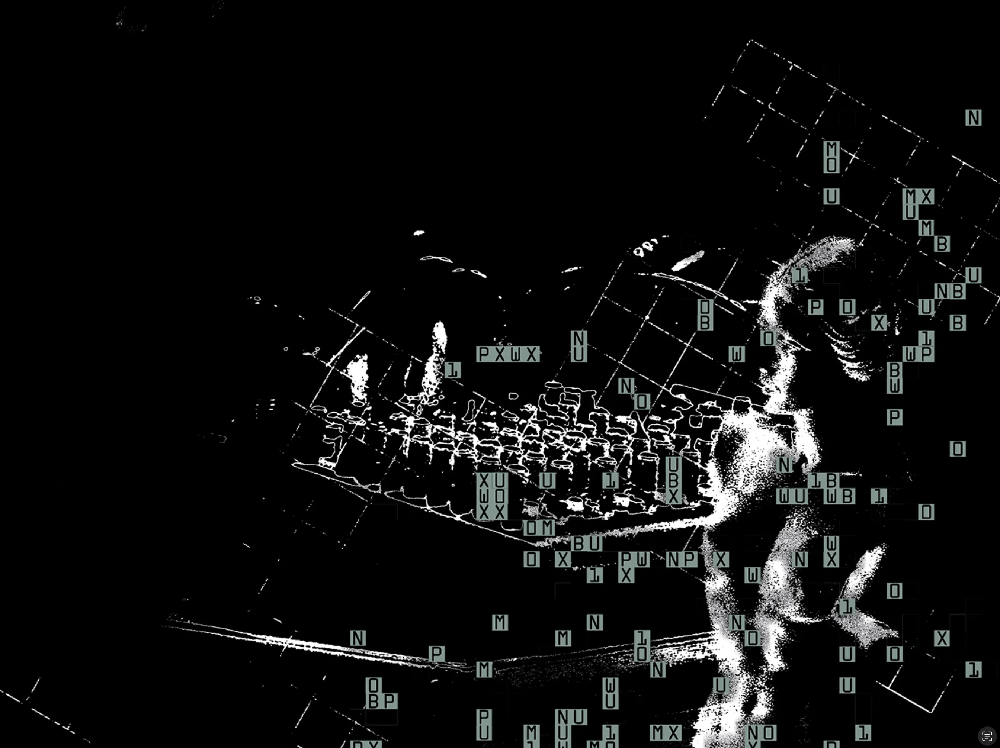

Studentessa di Digital Design
e Communication @ LABA
Sofia
Zanini.
PROGETTO✳ESPLORO✳RIPETO
01 / PROGETTO DI TESI
La musica
come esperienza.
Dimusi è un progetto editoriale che esplora la ricerca del divino nella musica contemporanea: un invito a fermarsi e tornare ad ascoltare.
SCOPRI DIMUSI SU INSTAGRAM
PROGETTO DI TESI · DIMUSI MAGAZINE